ARROWS를 열고 그릴 준비하기
그림은 Arrows라는 무료 웹 도구로 그립니다. 원과 화살표로 무엇과 무엇이 어떻게 이어지는지 그려 보는 도구입니다. 위의 ARROWS 열기를 누르거나, 검색창에 arrows.app을 치고 주소가 https://arrows.app인 결과를 누르세요.
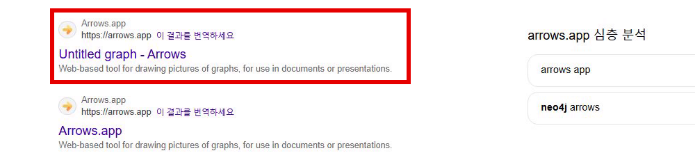
쿠키 안내는 아무 쪽이나 누르고 도움말 창은 아래 Done으로 닫습니다. 왼쪽 넓은 곳에 그리고, 오른쪽 칸에는 고른 것의 이름 같은 것을 적습니다. 가운데에 처음부터 있는 원을 첫 원으로 씁니다.
원이 이름을 적기에 작아서 먼저 키웁니다. STYLE 아래 Customize를 누르고 radius(원 크기)를 50에서 60으로 바꾼 뒤 Tab을 누르세요. 여기서 Enter를 치면 원이 하나 더 생깁니다. 앞으로 만드는 원도 이 크기로 나옵니다.
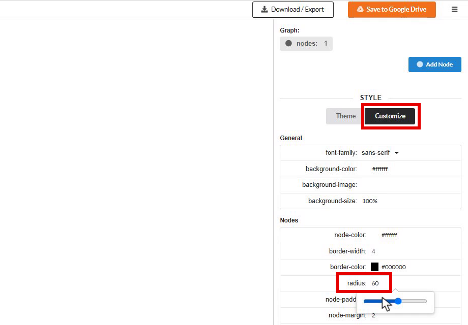
화살표에 적는 이름은 원래 화살표를 따라 기울어서 나오는데, 가로로 나와야 읽기 편합니다. 오른쪽 칸을 아래로 내려 Arrows 묶음의 detail-orientation을 horizontal로 바꾸고 칸을 다시 맨 위로 올리세요.
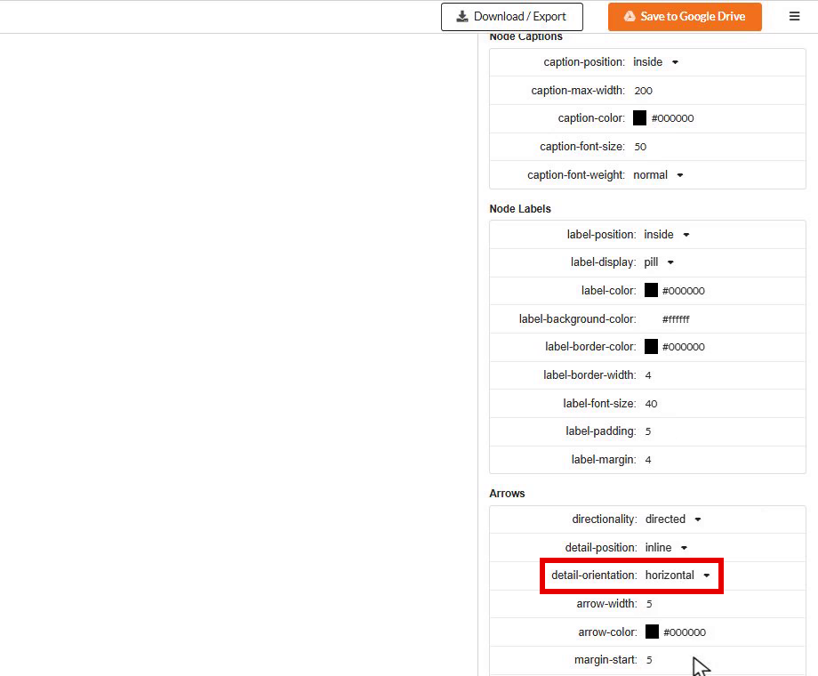
그릴 자리를 넉넉히 쓰려고 첫 원을 왼쪽으로 옮겨 놓습니다. 원 안쪽을 잡고 끌되, 화면 끝에 바짝 대면 그림이 줄어드니 끝까지는 가져가지 마세요.
확인 radius가 60, detail-orientation이 horizontal이고, 빈 원이 그림판 왼쪽에 있습니다.
설비 · 쿨러 · 센서 잇기
쿨러도 센서도 설비에 달려 있어서 설비부터 놓습니다. 옮겨 둔 원을 누르고 Caption에 이름을 적으세요. 이름만 봐서는 설비인지 부품인지 알 수 없으니 + Label을 눌러 종류도 적고 Tab으로 마칩니다. 종류는 보통 영어로 적습니다. 적을 글은 모두 표에 있으니 복사해 오면 편합니다.
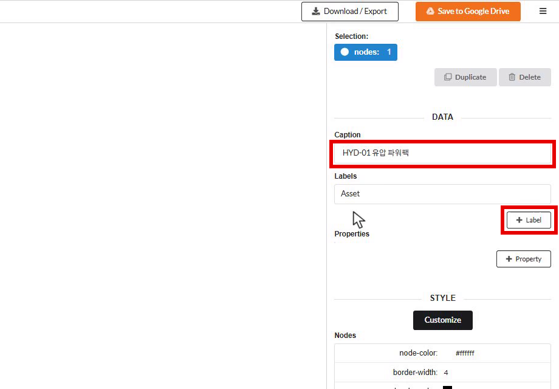
| Caption · 이름 | Label · 종류 | 끌어낼 원 | 왜 놓나 |
|---|---|---|---|
| HYD-01 유압 파워팩 | Asset | (처음부터 있는 원) | 설비입니다. HYD-01은 설비 번호입니다. |
| 오일 쿨러 | Component | HYD-01 유압 파워팩 | 부품입니다. 기름을 식히고, 이번에 고장 나는 곳입니다. |
| 유온 센서 TS1 | Sensor | 오일 쿨러 | 쿨러가 잘 식히는지는 기름 온도(유온)를 재 봐야 압니다. |
새 원은 이미 있는 원에서 끌어냅니다. 원을 누르면 둘레에 하늘색 띠가 생기는데, 안쪽을 잡으면 원이 옮겨지고 띠를 잡아 빈 곳에 놓아야 새 원이 나옵니다. 함께 생기는 화살표는 늘 끌기 시작한 원에서 새 원 쪽으로 나갑니다.
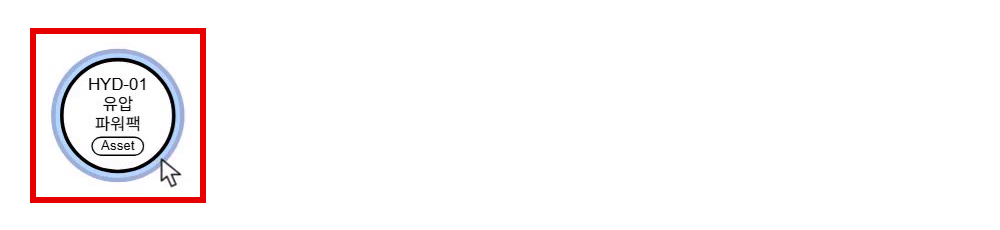
선만으로는 둘이 무슨 사이인지 알 수 없어서 화살표에 이름을 붙입니다. 화살표는 모두 이 차례로 긋습니다.
- 둘 사이를 한 문장으로 말합니다. 유압 파워팩은 오일 쿨러를 부품으로 가진다.
- 화살표가 그 문장의 주어(유압 파워팩)에서 나가 있는지 봅니다. 반대면 뒤집습니다(다음 단계에 나옵니다).
- 화살표를 누르고 Type에 「부품으로 가진다」에 해당하는 이름
HAS_COMPONENT를 적습니다. 영어 대문자로 쓰고 낱말 사이는 밑줄로 잇습니다. - 화살표를 따라 읽어 봅니다. 나가는 쪽이 주어, 닿는 쪽이 상대입니다. 처음 말한 문장으로 읽히면 맞습니다.
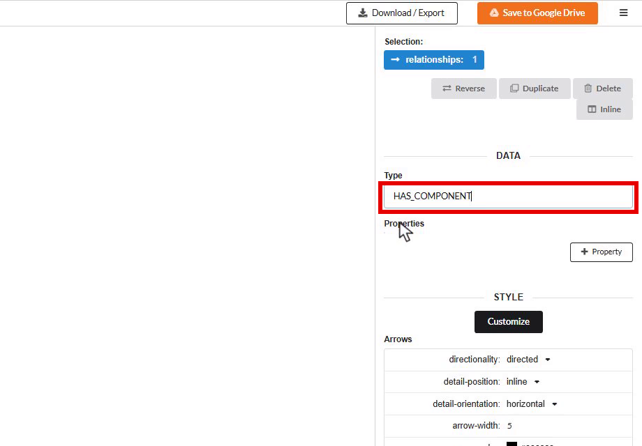
| 주어 · 화살표가 나가는 원 | 상대 · 닿는 원 | 읽으면 | Type · 화살표 이름 | 방향 |
|---|---|---|---|---|
| HYD-01 유압 파워팩 | 오일 쿨러 | …를 부품으로 가진다 | HAS_COMPONENT | 맞음 |
| 오일 쿨러 | 유온 센서 TS1 | …로 감시된다 | MONITORED_BY | 맞음 |
이름에 정답은 없고, 둘 사이가 누가 봐도 분명하게 읽히면 됩니다. 둘째 화살표도 「센서가 쿨러를 감시한다」고 할 수 있지만, 이름을 감시된다(MONITORED_BY)로 정했으면 주어는 쿨러이고 화살표도 쿨러에서 나가야 합니다.
이번에 추가 설비 · 오일 쿨러 · 유온 센서
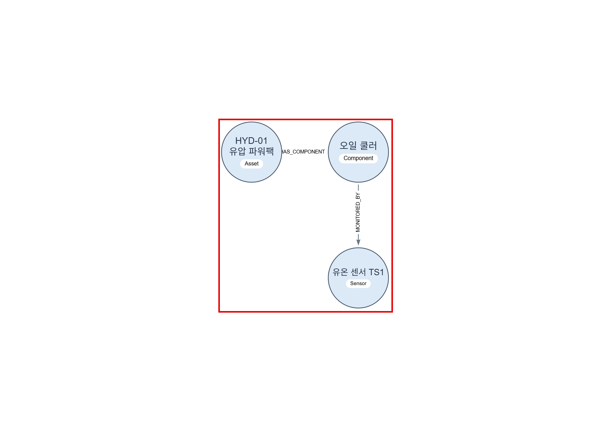
확인 원 3개 · 화살표 2개. 설비에서 화살표 두 개를 따라가면 쿨러를 어느 센서로 보는지 나옵니다. 이론에서 원은 노드, 이름과 방향이 있는 화살표는 관계라고 했습니다.
증상과 고장 유형 구분하기
어느 날부터 유온이 자꾸 오른다고 해 봅니다. 온도가 올랐다는 것은 센서에 잡힌 일이라 원으로 놓습니다. 다만 그것은 눈에 보인 신호이고, 진짜 문제는 쿨러가 기름을 못 식힌다는 것입니다. 온도는 다른 고장 때문에도 오를 수 있어서 둘을 한 원에 섞지 않습니다.
| Caption · 이름 | Label · 종류 | 끌어낼 원 | 왜 놓나 |
|---|---|---|---|
| 유온 상승 | Symptom | 유온 센서 TS1 | 증상입니다. 눈에 보인 이상을 말합니다. |
| 쿨러 냉각 성능 상실 | FailureMode | 유온 상승 | 고장 유형입니다. 어떤 기능을 잃었는지를 말합니다(식히는 힘). |
첫 화살표의 문장은 유온 상승은 유온 센서로 관측된다이고 주어는 유온 상승인데, 센서에서 끌어냈기 때문에 화살표는 센서에서 나가 있습니다. 이대로 읽으면 「유온 센서가 유온 상승으로 관측된다」가 되니, 화살표를 누르고 Reverse로 뒤집은 뒤 Type을 적습니다. 끌어내다 보면 이렇게 거꾸로 나올 때가 있어서 문장을 먼저 말해 봅니다.
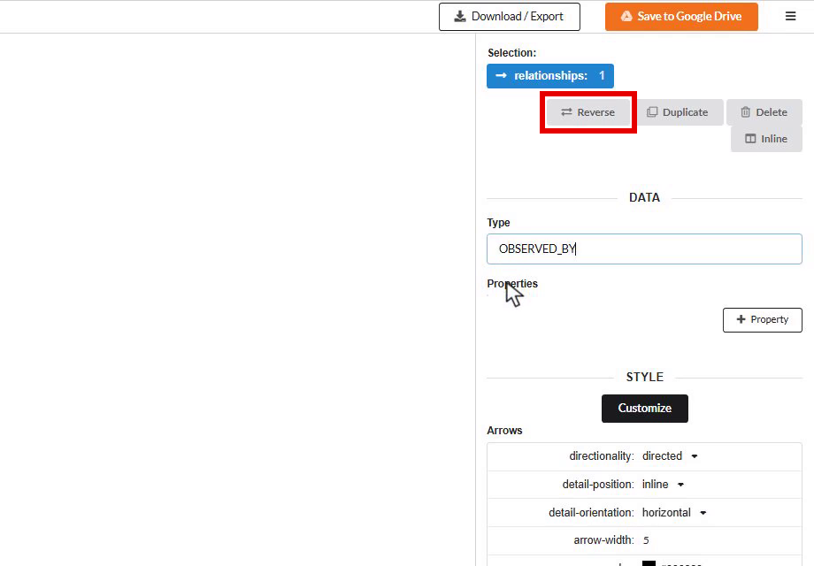
고장이 난 곳은 이미 있는 오일 쿨러입니다. 쿨러 원을 하나 더 만들면 그림에서 쿨러가 두 대가 되니, 고장을 누르고 띠를 오일 쿨러 원 위에 놓으세요. 원은 안 생기고 화살표만 생깁니다.
| 주어 · 화살표가 나가는 원 | 상대 · 닿는 원 | 읽으면 | Type · 화살표 이름 | 방향 |
|---|---|---|---|---|
| 유온 상승 | 유온 센서 TS1 | …로 관측된다 | OBSERVED_BY | 센서에서 끌어내 거꾸로 나옴 → Reverse |
| 유온 상승 | 쿨러 냉각 성능 상실 | …을 가리킨다 | INDICATES | 맞음 |
| 쿨러 냉각 성능 상실 | 오일 쿨러 | …에서 일어난다 | OCCURS_IN | 고장의 띠를 오일 쿨러 원 위에 놓기 |
쿨러 같은 물건은 센서가 지켜본다고 감시(MONITORED_BY), 온도가 오른 것 같은 일은 센서에 잡혔다고 관측(OBSERVED_BY)으로 이름을 나눴습니다.
이번에 추가 유온 상승 · 쿨러 냉각 성능 상실
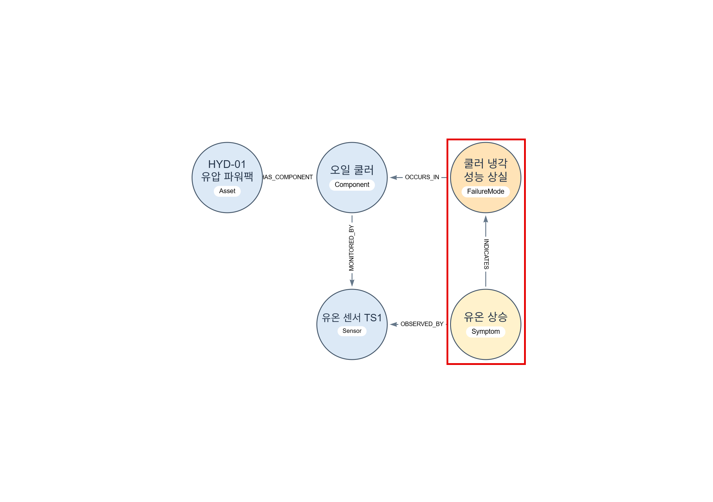
확인 원 5개 · 화살표 5개. 유온 상승은 유온 센서로 관측됐고 쿨러 냉각 성능 상실을 가리키며, 그 고장은 오일 쿨러에서 일어났습니다.
원인과 증거 달기
왜 못 식히는지는 아직 모릅니다. 쿨러 안에는 핀이라는 얇은 날개가 촘촘히 서 있고, 팬 바람이 그 사이를 지나가며 열을 가져갑니다. 여기에 먼지가 끼면 바람길이 막힙니다. 고장이 왜 났는지를 말해 주는 것이 원인이고, 원인은 여러 가지일 수 있어서 원인마다 원을 하나씩 놓습니다.
| Caption · 이름 | Label · 종류 | 끌어낼 원 | 왜 놓나 |
|---|---|---|---|
| 쿨러 핀 오염 | Cause | 쿨러 냉각 성능 상실 | 원인입니다. 핀에 먼지가 껴 바람길이 막힌 것입니다. |
| 주어 · 화살표가 나가는 원 | 상대 · 닿는 원 | 읽으면 | Type · 화살표 이름 | 방향 |
|---|---|---|---|---|
| 쿨러 핀 오염 | 쿨러 냉각 성능 상실 | …을 일으킨다 | CAUSES | 고장에서 끌어내 거꾸로 나옴 → Reverse |
CAUSES는 원인에서 고장 쪽으로만 긋기로 약속합니다. 그래야 나중에 고장에서 이 화살표를 거꾸로 따라가기만 해도 원인이 다 나옵니다.
핀 오염이 맞는지는 값을 재서 기준에 대어 봐야 압니다. 무슨 값을 어떤 기준에 대어 볼지 정해 둔 것이 이론에서 말한 증거입니다. 증거는 대어 보는 기준이라서 원을 새로 놓지 않고 핀 오염 원에 꼬리표처럼 답니다. 핀 오염을 누르고 + Property를 눌러 왼쪽 칸에 무엇을 볼지, 오른쪽 칸에 기준을 적고 Tab을 누르세요. 오른쪽 칸에서 Enter를 치면 빈 줄이 하나 더 생깁니다. 둘째 줄은 + Property를 한 번 더 누릅니다.
| 왼쪽 칸(무엇을 볼지) | 오른쪽 칸(기준) | 뜻 |
|---|---|---|
| 냉각 효율 | 30초 평균 < 70 % | 쿨러가 열을 얼마나 빼내는지 본 값입니다. 70 %가 안 되면 제대로 못 빼는 것입니다. |
| 팬 진동 | 2분 평균 < 0.9 mm/s | 팬이 떨리는 정도입니다. 탈 난 팬은 심하게 떨리니, 작으면 팬은 멀쩡한 것입니다. |
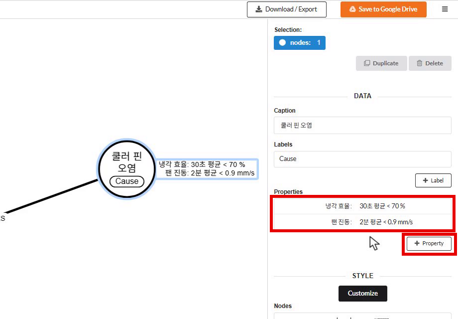
열을 못 빼는데 팬은 멀쩡하다면 핀이 막혔다고 볼 수 있어서, 두 줄이 다 맞아야 핀 오염입니다. 이렇게 원에 달아 둔 것을 이론에서 속성이라고 했습니다.
이번에 추가 쿨러 핀 오염 · 조건 두 줄
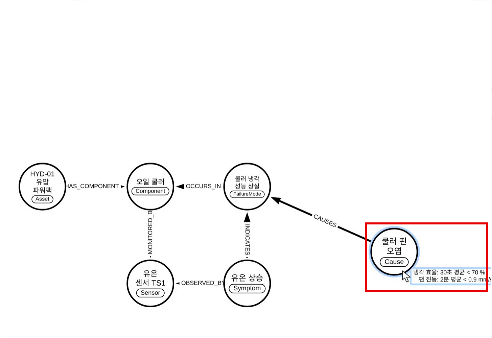
확인 원 6개 · 화살표 6개. CAUSES 화살표가 핀 오염에서 고장 쪽으로 나가고, 핀 오염 옆에 조건 두 줄이 있습니다.
조치와 근거 매뉴얼 잇기
원인을 찾았으면 손을 봐야 합니다. 손보는 것은 사람이 하는 일이라 고장 · 원인과 다른 원으로 놓고, 종류는 Skill로 적습니다. 할 줄 아는 일 하나하나를 스킬이라고 부르는데 조치 하나가 그런 일 하나입니다. 조치에는 근거가 있어야 하니 그 조치가 적힌 매뉴얼의 절도 원으로 놓습니다. 절은 매뉴얼을 번호로 나눈 토막이고, HM-8.5는 쿨러 팬 매뉴얼 HM-8의 다섯 번째 절입니다. 절의 내용은 맨 위 매뉴얼 근거 단추로 볼 수 있습니다.
| Caption · 이름 | Label · 종류 | 끌어낼 원 | 왜 놓나 |
|---|---|---|---|
| 팬 최대 운전 | Skill | 쿨러 냉각 성능 상실 | 완화 조치입니다. 팬을 가장 세게 돌려 우선 온도만 낮춥니다. |
| 쿨러 핀 세척 | Skill | 쿨러 냉각 성능 상실 | 근본 조치입니다. 핀을 닦아 원인인 먼지까지 없앱니다. |
| HM-8.5 즉시 완화 조치 | ManualSection | 팬 최대 운전 | 매뉴얼 절입니다. 팬을 세게 돌려 온도를 낮추는 방법이 적혀 있습니다. |
| HM-8.7 근본 조치 | ManualSection | 쿨러 핀 세척 | 핀을 닦는 법이 적힌 절입니다. |
| 주어 · 화살표가 나가는 원 | 상대 · 닿는 원 | 읽으면 | Type · 화살표 이름 | 방향 |
|---|---|---|---|---|
| 쿨러 냉각 성능 상실 | 팬 최대 운전 | …으로 완화된다 | MITIGATED_BY | 맞음 |
| 쿨러 냉각 성능 상실 | 쿨러 핀 세척 | …으로 근본 해결된다 | REMEDIED_BY | 맞음 |
| 쿨러 핀 세척 | 쿨러 핀 오염 | …을 없앤다 | ADDRESSES | 핀 세척의 띠를 쿨러 핀 오염 원 위에 놓기 |
| 팬 최대 운전 | HM-8.5 즉시 완화 조치 | …를 참조한다 | REFERS_TO | 맞음 |
| 쿨러 핀 세척 | HM-8.7 근본 조치 | …를 참조한다 | REFERS_TO | 맞음 |
완화와 근본 해결은 이름을 다르게 적어 둬야 온도만 낮춘 조치인지 원인까지 없앤 조치인지 헷갈리지 않습니다. 또 핀 세척은 핀 오염일 때만 통하니, 어느 원인에 맞는 조치인지도 ADDRESSES로 이어 둡니다.
이번에 추가 팬 최대 운전 · 쿨러 핀 세척 · 매뉴얼 절 둘
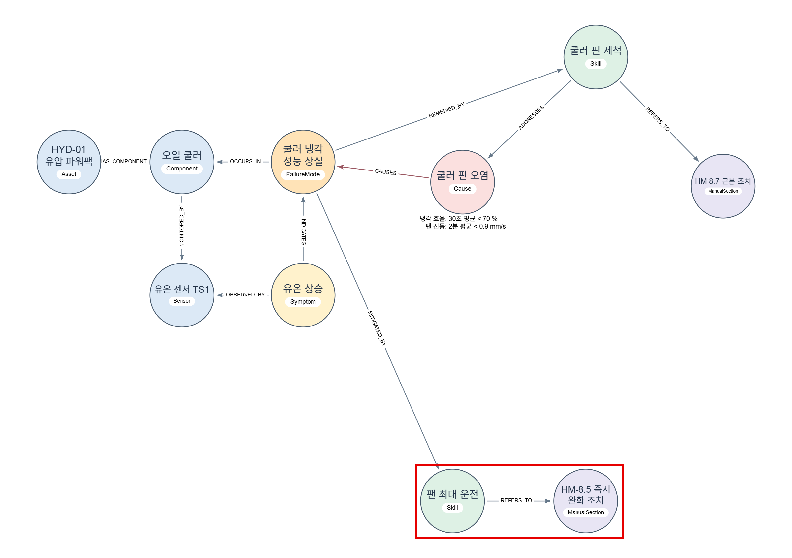
확인 원 10개 · 화살표 11개. 핀 오염이라고 나오면 화살표만 따라가도 조치는 쿨러 핀 세척, 근거는 HM-8.7까지 나옵니다.
다른 원인으로 넓히기
온도가 오르는 까닭이 핀 오염 하나만은 아닙니다. 고장은 같고 원인만 다르니, 원인을 하나씩 더 놓고 증거와 그 원인에 맞는 조치를 붙입니다.
| Caption · 이름 | Label · 종류 | 끌어낼 원 | 왜 놓나 |
|---|---|---|---|
| 팬 구동 불량 | Cause | 쿨러 냉각 성능 상실 | 팬을 돌리는 벨트가 미끄러지면 팬이 제대로 못 돌아 바람이 줄고, 똑같이 열이 안 빠집니다. |
| 팬 점검 | Skill | 쿨러 냉각 성능 상실 | 벨트를 살펴 손보는 근본 조치입니다. 팬이 문제인데 핀을 닦으면 안 됩니다. |
| HM-8.1 팬 벨트 점검 | ManualSection | 팬 점검 | 벨트 살피는 법이 적힌 절입니다. |
| 증거를 달 원 | 왼쪽 칸 | 오른쪽 칸 |
|---|---|---|
| 팬 구동 불량 | 팬 진동 | 2분 평균 ≥ 0.9 mm/s |
핀 오염의 팬 진동은 0.9 미만이고 여기는 0.9 이상입니다. 같은 값을 놓고 떨림이 작으면 핀 쪽, 크면 팬 쪽으로 원인이 갈립니다.
| 주어 · 화살표가 나가는 원 | 상대 · 닿는 원 | 읽으면 | Type · 화살표 이름 | 방향 |
|---|---|---|---|---|
| 팬 구동 불량 | 쿨러 냉각 성능 상실 | …을 일으킨다 | CAUSES | 고장에서 끌어내 거꾸로 나옴 → Reverse |
| 쿨러 냉각 성능 상실 | 팬 점검 | …으로 근본 해결된다 | REMEDIED_BY | 맞음 |
| 팬 점검 | 팬 구동 불량 | …을 없앤다 | ADDRESSES | 팬 점검의 띠를 팬 구동 불량 원 위에 놓기 |
| 팬 점검 | HM-8.1 팬 벨트 점검 | …를 참조한다 | REFERS_TO | 맞음 |
이번에 추가 팬 구동 불량 · 팬 점검 · HM-8.1
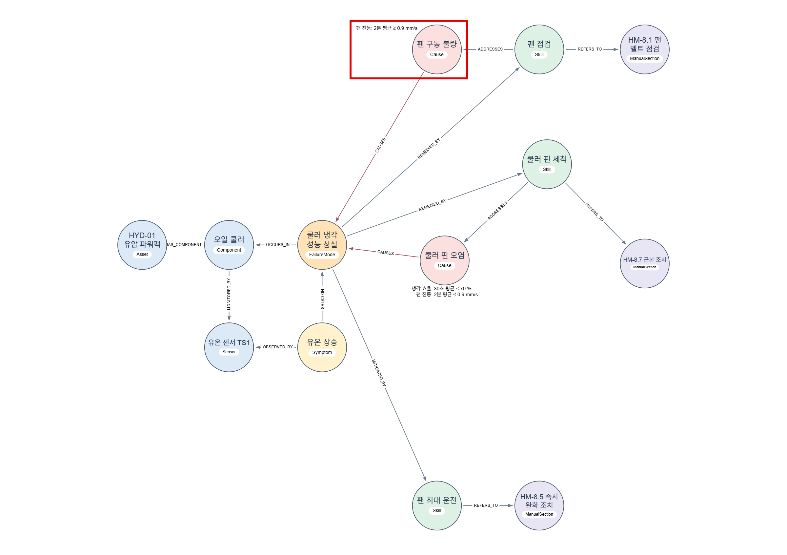
원인이 하나 더 있습니다.
| Caption · 이름 | Label · 종류 | 끌어낼 원 | 왜 놓나 |
|---|---|---|---|
| 주변 온도 상승 | Cause | 쿨러 냉각 성능 상실 | 설비를 넣어 둔 함(캐비닛) 안이 더우면 쿨러도 팬도 멀쩡한데 열이 안 빠집니다. 온도가 오른 일이지만 쿨러가 왜 못 식히는지를 말해 주는 까닭이라 원인으로 놓습니다. |
| 캐비닛 환기 보강 | Skill | 주변 온도 상승 | 필터를 청소하고 공기를 빼 주는 팬을 살펴 캐비닛에 바람이 통하게 하는 근본 조치입니다. |
| 증거를 달 원 | 왼쪽 칸 | 오른쪽 칸 |
|---|---|---|
| 주변 온도 상승 | 캐비닛 온도 | 2분 평균 ≥ 35 ℃ |
| 주어 · 화살표가 나가는 원 | 상대 · 닿는 원 | 읽으면 | Type · 화살표 이름 | 방향 |
|---|---|---|---|---|
| 주변 온도 상승 | 쿨러 냉각 성능 상실 | …을 일으킨다 | CAUSES | 고장에서 끌어내 거꾸로 나옴 → Reverse |
| 캐비닛 환기 보강 | 주변 온도 상승 | …을 없앤다 | ADDRESSES | 원인에서 끌어내 거꾸로 나옴 → Reverse |
| 쿨러 냉각 성능 상실 | 캐비닛 환기 보강 | …으로 근본 해결된다 | REMEDIED_BY | 고장의 띠를 캐비닛 환기 보강 원 위에 놓기 |
| 캐비닛 환기 보강 | HM-8.7 근본 조치 | …를 참조한다 | REFERS_TO | 환기 보강의 띠를 HM-8.7 원 위에 놓기 |
새 원은 이어질 원이면 어디서 끌어내도 되어서 환기 보강은 원인에서 끌어냈습니다. 그래서 화살표가 거꾸로 나와 「주변 온도 상승이 환기 보강을 없앤다」가 되니 뒤집습니다. 환기 보강 하는 법은 핀 세척과 같은 8.7절에 있어 이미 있는 HM-8.7 원에 잇기만 합니다. 절을 원으로 놓아 둔 덕분에 조치 둘이 같은 절을 근거로 삼습니다.
이번에 추가 주변 온도 상승 · 캐비닛 환기 보강
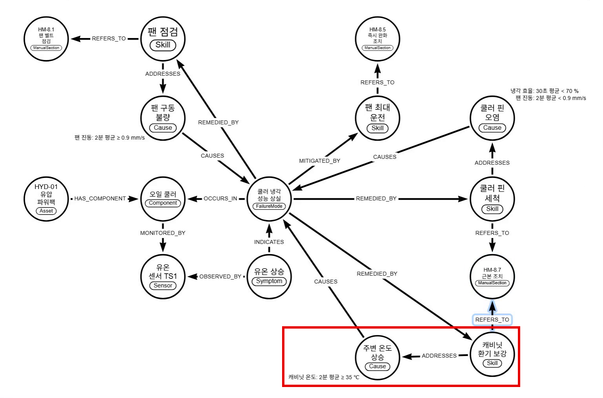
확인 원 15개 · 화살표 19개. 핀 오염에는 쿨러 핀 세척, 팬 구동 불량에는 팬 점검, 주변 온도 상승에는 캐비닛 환기 보강이 붙었습니다.
고장이 고장으로 번지는 길과 절차 번호
고장이 다른 고장으로 번지는 경우도 있습니다. 팬의 축을 받쳐 주는 베어링이 닳으면(베어링 열화) 팬이 흔들리고, 그러다 쿨러까지 못 식히게 됩니다.
| Caption · 이름 | Label · 종류 | 끌어낼 원 | 왜 놓나 |
|---|---|---|---|
| 팬 베어링 열화 | FailureMode | 쿨러 냉각 성능 상실 | 알려 주는 증상이 따로 있어서 그 증상에서 출발해 찾아올 수 있어야 합니다. 그래서 원인 말고 고장 유형으로 놓습니다. |
| 진동 증가 | Symptom | 팬 베어링 열화 | 베어링이 닳으면 팬 진동이 커집니다. 원인에 단 팬 진동은 재서 견주는 기준이고, 이것은 실제로 일어난 일이라 원으로 놓습니다. |
| 주어 · 화살표가 나가는 원 | 상대 · 닿는 원 | 읽으면 | Type · 화살표 이름 | 방향 |
|---|---|---|---|---|
| 팬 베어링 열화 | 쿨러 냉각 성능 상실 | …로 이어진다 | LEADS_TO | 쿨러 냉각 성능 상실에서 끌어내 거꾸로 나옴 → Reverse |
| 진동 증가 | 팬 베어링 열화 | …를 가리킨다 | INDICATES | 베어링 열화에서 끌어내 거꾸로 나옴 → Reverse |
여기는 양쪽이 다 고장이라 CAUSES를 쓰지 않습니다. 쓰면 나중에 거꾸로 따라갔을 때 원인과 고장이 섞여서 나옵니다. 고장이 고장으로 이어질 때는 LEADS_TO를 씁니다.
남은 것은 절차 번호입니다. 매뉴얼 한 절 안에는 작업 순서가 여러 개 적혀 있습니다. 이 작업 순서를 절차라고 하고, 현장에서는 표준 작업 절차를 줄여 SOP라고 부르며 SOP로 시작하는 번호를 붙입니다. 같은 8.7절이어도 핀 세척과 환기 보강이 따르는 절차는 다릅니다. 번호를 8.7절 원에 적으면 두 조치가 같은 번호를 보게 되니, 조치에서 절로 가는 화살표에 적습니다. 화살표를 누르고 + Property의 왼쪽 칸에 절차, 오른쪽 칸에 번호를 적은 뒤 Tab을 누르세요.
| 누를 화살표 | 왼쪽 칸 | 오른쪽 칸 |
|---|---|---|
| 팬 점검 → HM-8.1 팬 벨트 점검 | 절차 | SOP-FAN-11 |
| 캐비닛 환기 보강 → HM-8.7 근본 조치 | 절차 | SOP-COOL-15 |
| 쿨러 핀 세척 → HM-8.7 근본 조치 | 절차 | SOP-COOL-14 |
| 팬 최대 운전 → HM-8.5 즉시 완화 조치 | 절차 | SOP-COOL-11 |
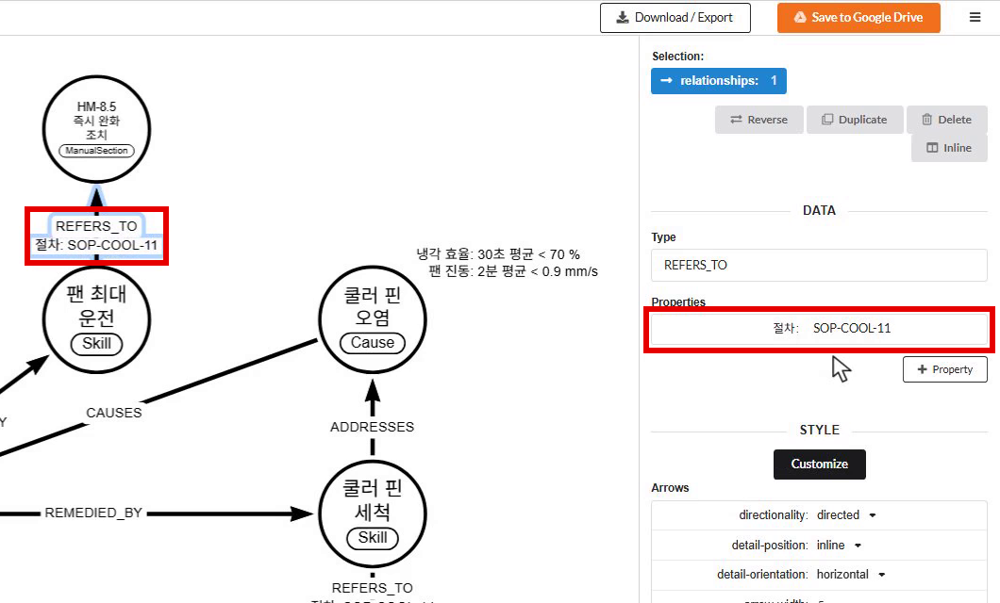
이번에 추가 팬 베어링 열화 · 진동 증가 · 절차 번호 넷
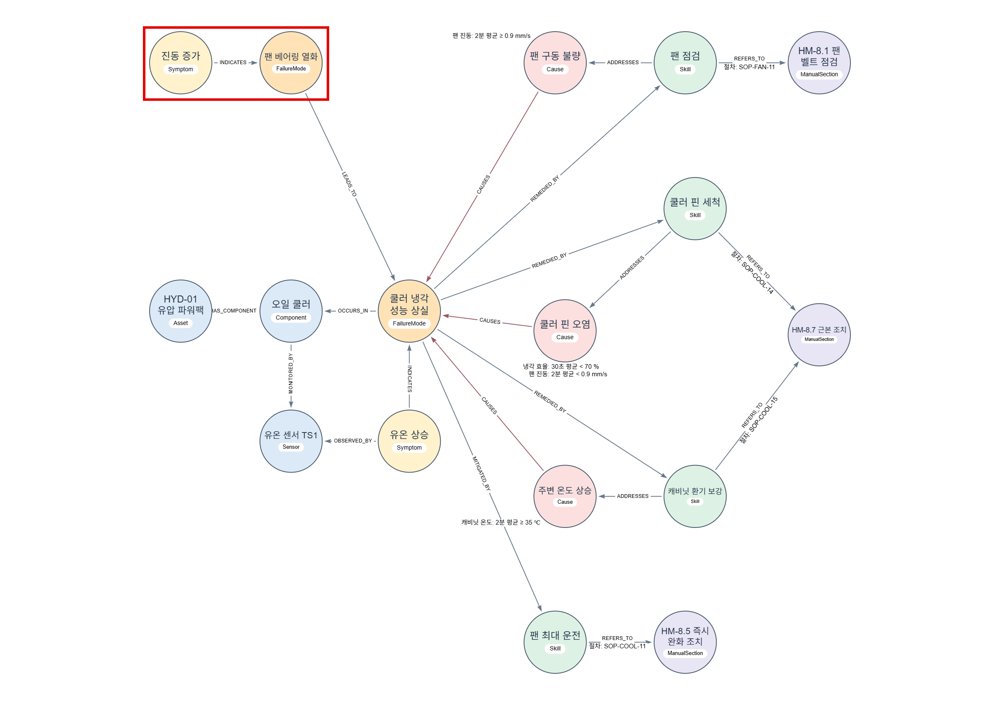
확인 원 17개 · 화살표 21개. HM-8.7로 들어가는 화살표 둘의 번호가 SOP-COOL-14와 SOP-COOL-15로 다릅니다.
색칠하고 그림으로 판단하기
판단에 쓰기 전에 원인과 조치가 눈에 잘 띄게 색을 넣습니다. 쿨러 핀 오염을 누르고 Ctrl을 누른 채 팬 구동 불량, 주변 온도 상승을 누르세요. 오른쪽에 nodes: 3이 나오면 셋이 같이 골라진 것입니다. node-color 칸에 연한 빨강 #fca5a5를 넣고 Tab을 누르면 한꺼번에 칠해집니다. 조치 넷(팬 최대 운전 · 쿨러 핀 세척 · 캐비닛 환기 보강 · 팬 점검)에는 연한 초록 #86efac를 넣고, 빈 곳을 눌러 고른 것을 푸세요.
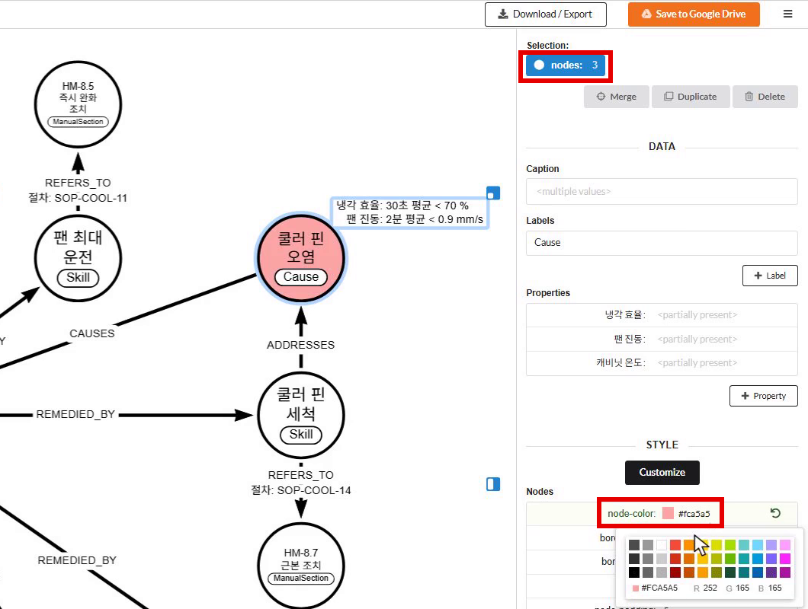
이제 그림을 써 봅니다. 유온이 올라서 경보가 왔다면, 유온 상승이 가리키는 고장은 쿨러 냉각 성능 상실이고, 여기로 들어오는 CAUSES를 거꾸로 따라가면 원인 셋이 나옵니다. 어느 것인지는 증거로 가립니다. 이론에서 본 쿨러 사건의 값은 냉각 효율 30초 평균 46.2 %, 팬 진동 2분 평균 0.575 mm/s, 캐비닛 온도 2분 평균 28 ℃입니다.
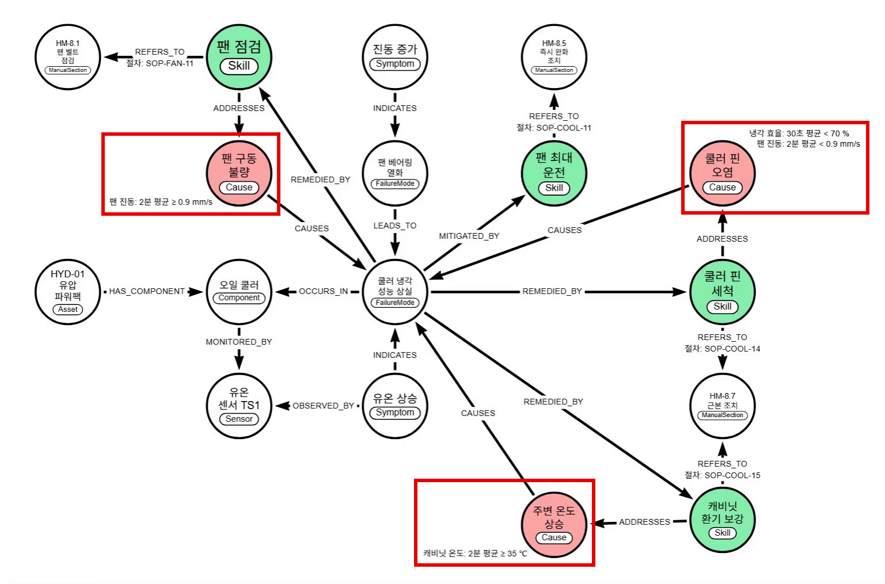
확인 핀 오염의 두 줄만 맞습니다(46.2는 70 미만, 0.575는 0.9 미만). 화살표를 따라가면 조치는 쿨러 핀 세척, 근거는 HM-8.7, 절차는 SOP-COOL-14입니다. 세척은 설비를 세워야 하니 그 전에 팬 최대 운전으로 온도부터 낮춰 둡니다.
값이 다르면 가는 길도 달라집니다.
- 팬 진동이 1.4 mm/s였다면 0.9 이상이라 팬 구동 불량이 남고, 길은 팬 점검, HM-8.1, SOP-FAN-11입니다. 진동 증가가 가리키는 팬 베어링 열화도 같이 의심하고, 상한 팬을 세게 돌리면 진동이 더 커지니 팬 최대 운전은 쓰지 않습니다.
- 처음 값에서 캐비닛 온도만 38 ℃였다면 주변 온도 상승과 핀 오염이 둘 다 맞습니다. 하나 맞았다고 멈추지 말고 캐비닛 환기 보강과 쿨러 핀 세척을 둘 다 봅니다.
- 팬 진동 값을 아직 못 받았다면 두 줄이 다 맞는지 알 수 없으니 핀 오염이라고 정하지 않고, 보류해 두고 진동 값부터 받습니다.
파일로 남기고 다시 열기
그린 것은 파일로 받아 둬야 나중에 이어서 고칠 수 있습니다. 위쪽 Download / Export를 누르세요. 처음 열려 있는 PNG는 보고서 같은 데 붙이는 그림 파일입니다. 맨 위 줄의 Download 하나만 받으면 됩니다.
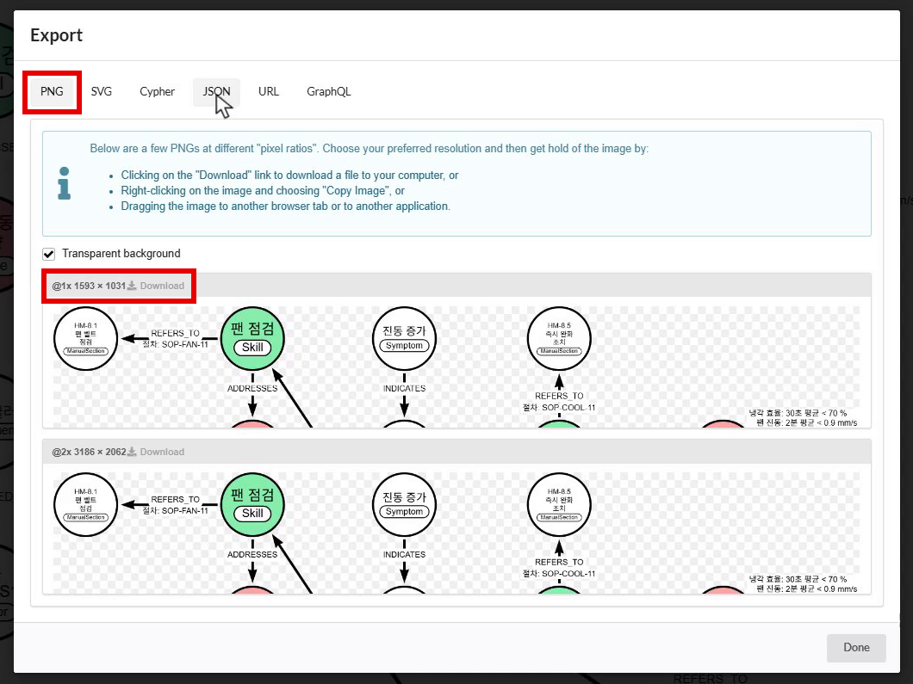
나중에 다시 열어서 고치려면 원과 화살표를 글자로 적어 둔 JSON 파일이 있어야 합니다. JSON 탭에서도 Download를 누르고 Done으로 닫으세요.
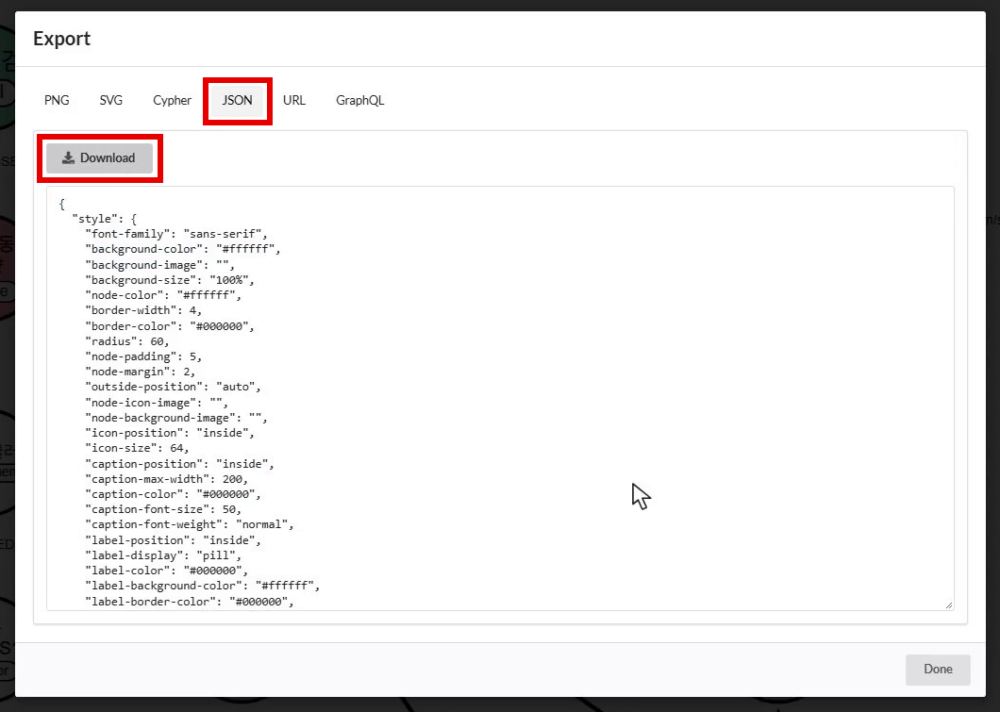
받은 파일이 잘 열리는지 새 그림에서 확인합니다. 원이나 화살표를 여러 개 골라 둔 채로는 새 그림으로 넘어가지 않으니, 먼저 빈 곳을 눌러 고른 것을 푸세요. 왼쪽 위 로고를 누르면 Web Browser storage가 두 군데 있는데, New에 커서를 올리면 나오는 쪽을 눌러야 합니다. 새 그림이 열려도 메뉴는 떠 있으니 그림 쪽을 한 번 눌러 닫고, 다시 로고에서 Import를 누르세요.
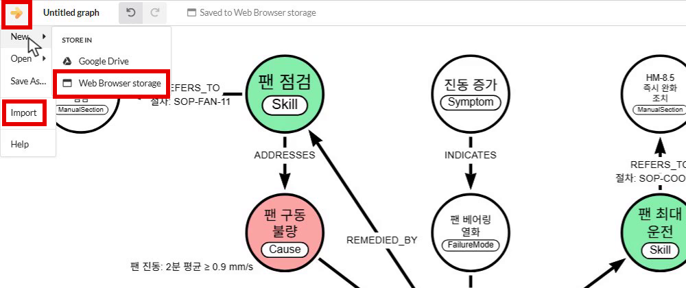
Choose File로 방금 받은 Untitled graph.json을 고르고 아래 Import를 누르세요.
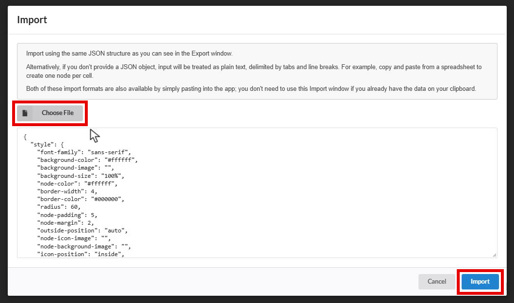
들어온 것이 전부 골라져 있어서 오른쪽 위에 개수가 나옵니다. 원 크기와 화살표 이름의 방향이 처음대로 돌아와 있는데 잘못 들어온 것이 아닙니다. 처음에 Customize에서 바꾼 두 가지는 같이 따라오지 않습니다. 새 그림에 처음부터 있던 빈 원은, 빈 곳을 눌러 고른 것을 푼 뒤 그 원만 누르고 오른쪽 Delete로 지우세요.
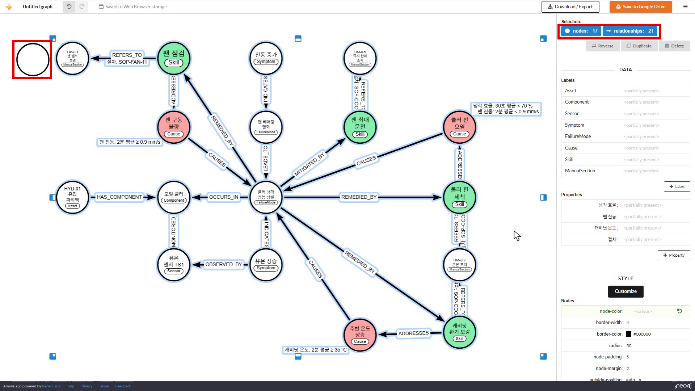
확인 nodes: 17 · relationships: 21로 그린 것과 같고, 원인 옆의 조건과 화살표의 절차 번호, 색이 함께 들어와 있습니다.
받은 두 파일은 이름이 Untitled graph라서 쿨러_지식그래프.json, 쿨러_지식그래프.png로 바꿔 두세요.
학교 PC는 껐다 켜면 받은 파일이 지워지니, 두 파일을 USB나 본인 클라우드에 옮겨 두세요.
마지막으로, 컴퓨터가 이 그림을 쓰려면 그림이 데이터를 쌓아 두는 데이터베이스에 들어가 있어야 합니다. 이론에서 이름을 본 Neo4j가 이런 그림을 담는 데이터베이스입니다. Download / Export를 다시 누르고 Cypher 탭을 누르면 이 그림을 Neo4j에 넣는 명령이 나옵니다. 맨 앞 CREATE가 만들라는 뜻입니다. Done으로 닫으세요.
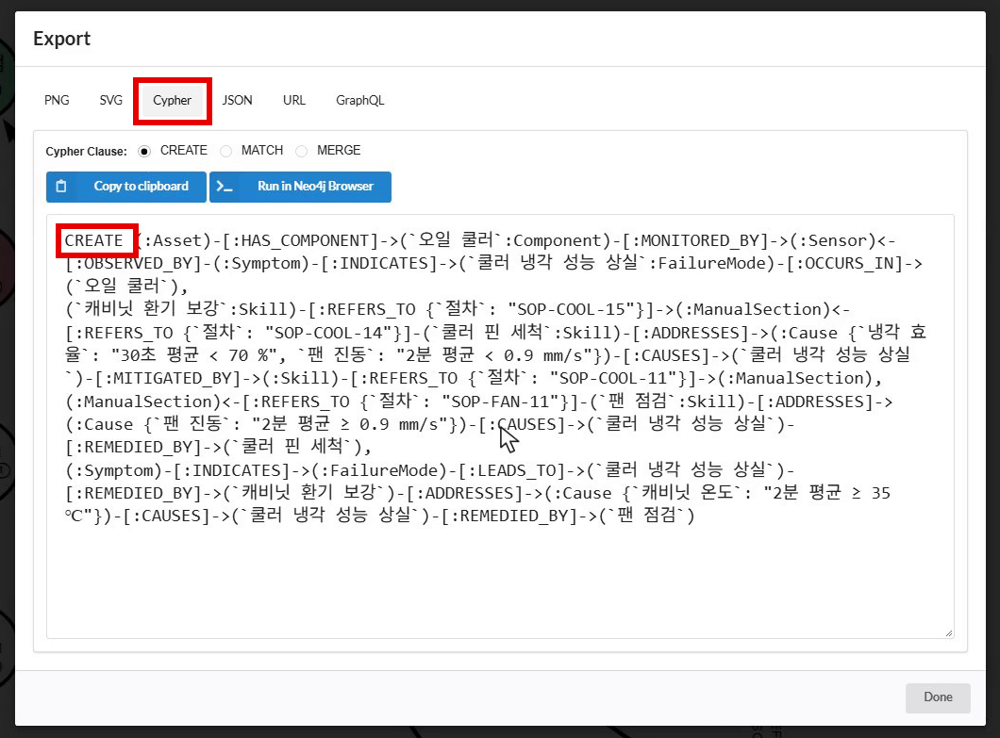
확인 글이 CREATE로 시작하고, 그 뒤로 원과 화살표, 속성까지 다 들어 있습니다.